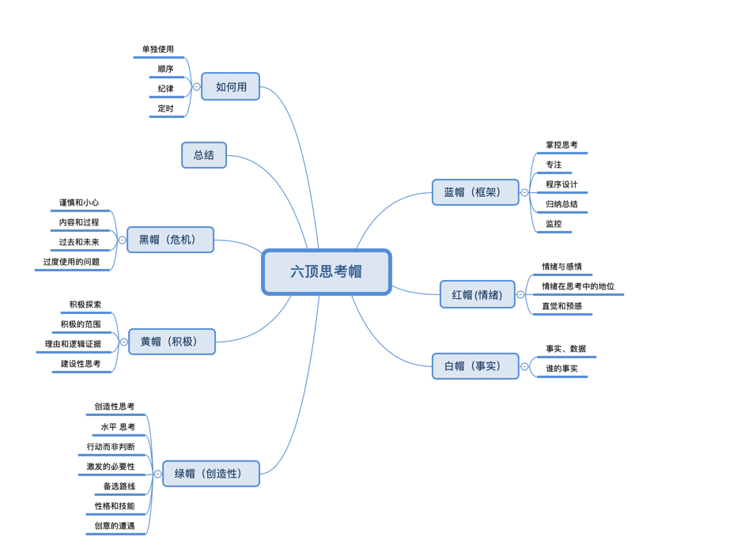

脑图

作者
作者: [英] 爱德华•德•博诺 (Edward De Bono)
目录
序
- 01 引言
- 02 六顶帽子，六种颜色
- 03 使用思考帽
蓝帽思考
- 04 蓝帽思考：掌控思考
- 05 蓝帽思考：专注
- 06 蓝帽思考：程序设计
- 07 蓝帽思考：归纳与总结
- 08 蓝帽思考：控制与监控
- 09 蓝色思考帽小结
白帽思考
- 10 白帽思考：事实和数据
- 11 白帽思考：这是谁的事实？
- 12 白帽思考：日式输入
- 13 白帽思考：事实、真理和哲学家
- 14 白帽思考：谁戴上了这顶帽子？
- 15 白色思考帽小结
红帽思考
- 16 红帽思考：情绪与情感
- 17 红帽思考：情绪在思考中的地位
- 18 红帽思考：直觉和预感
- 19 红帽思考：时时刻刻
- 20 红帽思考：用对情绪
- 21 红帽思考：情绪的语言
- 22 红色思考帽小结
黄帽思考
- 23 黄帽思考：冒险之帽——积极探索
- 24 黄帽思考：积极的范围
- 25 黄帽思考：理由和逻辑证据
- 26 黄帽思考：建设性思考
- 27 黄帽思考：投机远见
- 28 黄帽思考：与创造力的关系
- 29 黄色思考帽小结
黑帽思考
- 30 黑帽思考：谨慎和小心
- 31 黑帽思考：内容和过程
- 32 黑帽思考：过去和未来
- 33 黑帽思考：过度使用的问题
- 34 黑色思考帽小结
绿帽思考
- 35 绿帽思考：创造性思考
- 36 绿帽思考：水平思考
- 37 绿帽思考：行动而非判断
- 38 绿帽思考：激发的必要性
- 39 绿帽思考：备选路线
- 40 绿帽思考：性格与技能
- 41 绿帽思考：创意的遭遇？
- 42 绿色思考帽小结
- 43 六顶思考帽方法的优点
结 语
最近感悟
最近在读六顶思考帽这本书。很早之前就听过这本书，一直也没看，最近公司读书会形式有所改变，不再是大家通读一本书，说实话原来那种形式我不是太喜欢，每天往群里发几页，遇见想看的吧嫌发的太少，大多数时候都是不喜欢读，从书的选择和读形式我都是很抵触的，本来自我感觉还是喜欢看书的人，但读书会的这种形式，我看还是算了吧！
别把我好不容易来的读书兴趣给抹杀了！
现在信息爆炸，每天被各种垃圾信息包围，读书也是：如果不经过认真挑选，你就会被垃圾环绕。
作为一个挑食（精神食粮）的人，初看到这本书，扫了眼豆瓣，评分好像是6点多，属实不高。用什么6个颜色来表达6种思考方式，我觉得很欠妥。本来就有见文知意的字来形容这6种思维模式。愣是自造概念整了6种颜色。好吧——在我创造的世界里我就是上帝。
以上吐槽告一段落。说点积极的，书中还是有一些积极意义的：
6中思维模式
| 颜色 | 解释 |
|---|---|
| 蓝色 | 框架思维 |
| 白色 | 事实思维 |
| 绿色 | 创造性思维 |
| 黄色 | 积极思维 |
| 黑色 | 危机思维 |
| 红色 | 情绪思维 |
咋用呢？
书中说可以单独用，也可以顺序都用，也可以定时用，注意纪律性。好吧貌似都是说给开会使用的。
说到开会，想起了一句话：”评价一个人领导力水平高低就是看这人会不会开会”
书中说到了一句话我很喜欢，在此记录：”思考最大的敌人是复杂性，因为那会导致混乱。当思考过程清晰简单，它本身就很愉快，也更有效。”